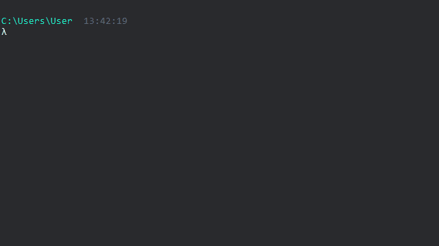
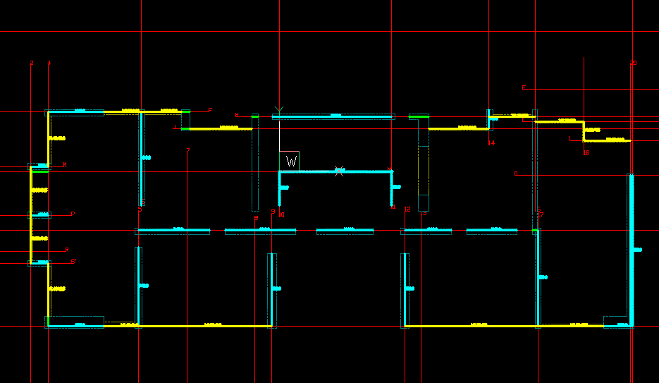
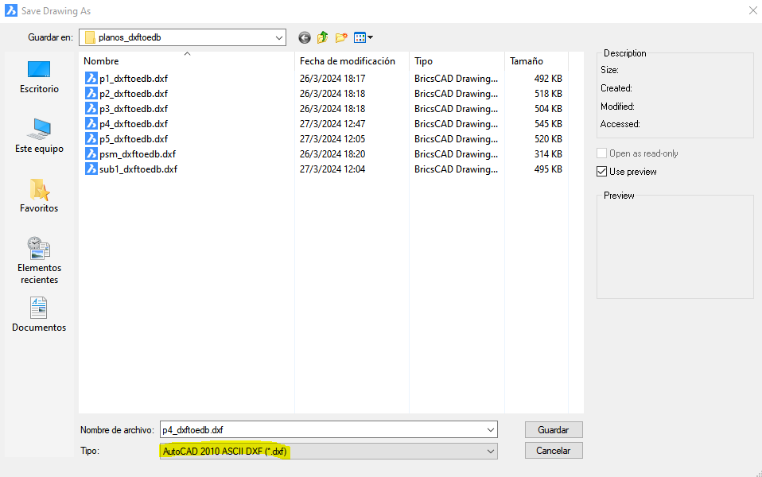
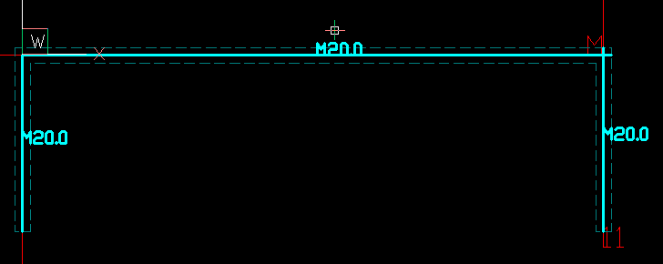
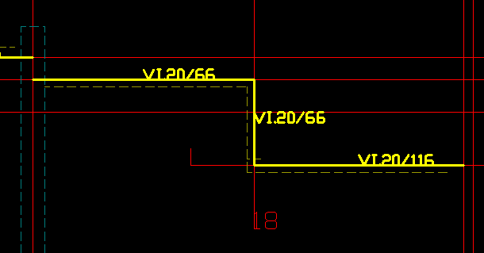

Dxftoedb2
Dxftoedb2 es el segundo script de la aplicación. Su función es leer los planos generados del paso anterior para encontrar los elementos estructurales y representarlos mediante una línea característica que pasa por el eje de coordenadas correspondiente.
Input
- Planos
planos_dxftoedb/grilla/<archivo>_grilla.dxf, uno por plano declarado en[Stories].Data(ver Planos Grilla). - Archivo
grilla_<Project_Number>.xlsx, en la raíz de la carpeta de trabajo y ya corregido (ver Excel de coordenadas). - Archivo de configuración
project_settings.toml, conProject_Information.Project_Number(obligatorio) y, si se usa, la sección[Estructura](ver Tolerancia de extensión a intersecciones).
Uso
Se debe ejecutar invocando el comando dxftoedb2
Luego de la ejecución se solicitará al usuario seleccionar la carpeta de trabajo. La carpeta de trabajo es donde está el archivo de configuración project_settings.toml.

Output
El resultado de la ejecución de dxftoedb2 es la generación de los planos planos_dxftoedb/dxftoedb/<archivo>_dxftoedb.dxf. Estos son planos de trabajo, en los que se debe ajustar los elementos estructurales.

Volver a correr dxftoedb2 reemplaza los _dxftoedb
Cada corrida genera los _dxftoedb desde cero y reemplaza los existentes sin preguntar: todo lo que se haya ajustado a mano en ellos se pierde. Copiar los planos antes de volver a correr la etapa. Los _cargas y el .edb no se tocan, pero quedan desactualizados hasta que se vuelvan a correr las etapas 3 y 4.
Ajustar el _dxftoedb antes de correr dxftoedb3
La etapa 3 copia el _dxftoedb al _cargas, y la etapa 4 lee solo el _cargas. Los ajustes de esta etapa se deben terminar antes de correr dxftoedb3: un cambio hecho después en el _dxftoedb no llega al modelo. Si el error aparece más tarde, repetir el cambio directamente en el _cargas, o corregir el _dxftoedb y volver a correr dxftoedb3, que reemplaza el _cargas completo y descarta sus hatch.
Guardar como DXF 2010
Al editar un plano, se debe guardar en formato AutoCAD 2010 ASCII DXF (.dxf)

Capas por etapa
Cada etapa escribe sus propias capas y los nombres cambian de una a otra. Los nombres se deben escribir exactamente así: la comparación distingue mayúsculas de minúsculas.
| Elemento | Prepinchado (plano original) | Etapa 1: _grilla |
Etapa 2: _dxftoedb |
Etapa 3: _cargas |
|---|---|---|---|---|
| Muros | _IEC_MUROS |
IEC_MUROS |
MUROS_etabs (se edita) y MUROS (caras originales, referencia) |
las mismas del _dxftoedb |
| Vigas | _IEC_VIGAS |
IEC_VIGAS |
VIGAS_etabs (se edita) y VIGAS (referencia) |
las mismas |
| Columnas | _IEC_COLUMNAS |
IEC_COLUMNAS |
COLUMNAS_etabs (se edita) |
la misma |
| Ejes | _IEC_EJES |
IEC_EJES |
EJES (los ejes del Excel, referencia) |
la misma |
| Borde de losa | _IEC_BLOSA |
IEC_BORDE_LOSA |
BORDE_LOSA (referencia) |
la misma |
| Arranques | _IEC_ARRANQUES |
IEC_ARRANQUES |
ARRANQUES (referencia) |
la misma |
| Perforaciones | _IEC_HOYOS |
IEC_HOYOS |
HOYOS (referencia) |
la misma |
| Losas | no se dibujan | no se dibujan | no se dibujan | LOSA (hatch de la tabla y de las losas) y la tabla (TABLECONTENT, TABLEGRID y TABLEBACKGROUND) |
La etapa 4 lee solo el _cargas: de MUROS_etabs, VIGAS_etabs y COLUMNAS_etabs toma los elementos del modelo, y de LOSA y TABLECONTENT las losas y sus propiedades. Las demás capas son de referencia: se pueden consultar, pero no se modelan.
No borrar las capas de referencia MUROS y VIGAS
Las etapas 3 y 4 usan las líneas de las capas MUROS y VIGAS para ubicar la tabla de losas y cargas (queda 5 m a la derecha del último muro o viga). Si el _dxftoedb no tiene líneas en esas capas, la etapa 3 termina con ERROR en los datos de entrada (ValueError): No se encontraron entidades en layers MUROS/VIGAS para ubicar la tabla. Si es el _cargas el que no las tiene, la etapa 4 termina con ERROR en los datos de entrada (ValueError): max() arg is an empty sequence.
Elementos estructurales
Muros y vigas están representados por una línea y un texto con su sección; las columnas, por un rectángulo cerrado. Para modificar el modelo se dibujan, se mueven o se borran estos objetos en las capas MUROS_etabs, VIGAS_etabs y COLUMNAS_etabs.
- El usuario debe ajustar el inicio y fin de las líneas para determinar las dimensiones de los elementos estructurales.
- El usuario debe ajustar el texto de la sección para representar adecuadamente la sección transversal.
Para que la etapa 4 asocie el texto de un muro o de una viga a su línea, el texto debe cumplir:
- Ser un TEXT: los MTEXT no se leen.
- Empezar con
M(muros) o conV(vigas), en mayúscula, y contener algún número. - Estar cerca de la línea. Primero se busca un texto de la misma capa con su punto de inserción justo en el punto medio de la línea (ese se toma sea cual sea su letra); si no lo hay, uno a menos de 2 cm de la línea y a menos de un cuarto del largo desde su punto medio; y, como último recurso, uno a menos de 10 cm de la línea y a menos de 0,3 veces el largo desde su punto medio. Estas dos búsquedas no miran la capa del texto, pero a una línea de
MUROS_etabssolo le sirven los que empiezan conM, y a una deVIGAS_etabslos que empiezan conV: un rótulo de viga cercano a un muro sin texto propio no se toma como rótulo del muro (el muro queda sin rótulo, ver más abajo). Lo seguro es dejarlo sobre la línea, dentro de su mitad central.
Los textos que escribe la etapa 2 quedan justo en el punto medio de la línea. Al mover un extremo para acortar o alargar una línea, se debe comprobar que su texto siga dentro de esa zona; si no, la línea puede quedar sin texto asociado (ver más abajo).
Una línea sin ningún texto asociado se modela igual, con un rótulo por defecto que no es una sección real. La etapa 4 avisa los muros (AVISO muros) y las vigas (AVISO vigas); la etapa 2 también avisa las vigas sin texto cercano:
| Elemento | Rótulo por defecto | Qué pasa en la etapa 4 |
|---|---|---|
| Muro | M99.9 |
Se modela con la sección M99.9G30, de 0,999 m de espesor. |
| Viga | V. 99.9/99.9 |
Se crea como frame con la sección de advertencia V99.9/99.9G30. |
En estas secciones el sufijo G30 es el hormigón del piso (4ª columna de [Stories].Data); en cada proyecto es el que corresponda.
Muros
Los muros son líneas en la capa "MUROS_etabs" de color calipso.

Cada línea lleva un texto con su espesor en centímetros: M más el número, por ejemplo M20.0 o M30. La etapa 2 lo escribe automáticamente, redondeado a 0,5 cm. El hormigón no va en el rótulo: la etapa 4 agrega el del piso (4ª columna de [Stories].Data).
Un muro sin rótulo se modela con 99,9 cm de espesor
Si una línea de MUROS_etabs no tiene un texto asociado, la etapa 4 le asigna el rótulo M99.9 y el muro entra al modelo con 0,999 m de espesor. La etapa 4 lo avisa por consola (AVISO muros [<archivo>_cargas]: N muro(s) sin rotulo cercano..., con la posición en cm del primero), pero el muro igual se modela: cambian la rigidez, los períodos y los cortes. Todo muro que se dibuje, se copie o se alargue debe llevar su rótulo. Al terminar, buscar en ETABS las secciones que empiezan con M99.9 para comprobar que no quedó ninguna.
Reglas del rótulo, que aplica la etapa 4:
- Se lee como
Mseguida del espesor en cm, con o sin espacio:M25,M25.5,M 25. - Un espesor menor a 1 cm no se modela: la etapa avisa con
AVISO murosy deja ese muro fuera del modelo. - Un texto que empieza con
MoVpero no sigue ese formato (por ejemploMuro1) detiene la etapa conERROR en los datos de entrada (ValueError): Rótulo de muro ilegible. Ese texto se corrige en el_cargas, que es lo que lee la etapa 4, y se vuelve a correr dxftoedb4. Si se corrige en el_dxftoedb, hay que volver a correr dxftoedb3 y después dxftoedb4.
Vigas
Las vigas son líneas en la capa "VIGAS_etabs" de color amarillo, con su rótulo (V20/50). El formato de los rótulos está en Prepinchado: vigas.

Una viga sin rótulo queda como V. 99.9/99.9
La etapa 2 asigna a cada tramo el texto de viga más cercano dentro de 1,5 m de su punto medio. Si no hay ninguno, el rótulo queda como V. 99.9/99.9, que no es una sección real, y la etapa 2 lo avisa por consola con la posición de las vigas, en cm (AVISO vigas [<archivo>_grilla_ejes]: N viga(s) sin rotulo cercano en IEC_VIGAS ...): agregar el rótulo V. <ancho>/<alto> junto a la viga en IEC_VIGAS y volver a correr la etapa 2, o corregir ese texto en el _dxftoedb antes de correr dxftoedb3. Si se deja, la etapa 4 vuelve a avisarlo (AVISO vigas [<archivo>_cargas]) y crea la viga como frame con la sección V99.9/99.9G30. Un rótulo que no se reconoce (por ejemplo V20x50) hace que la viga no se modele, también sin aviso.
Columnas
Las columnas son rectángulos cerrados en la capa "COLUMNAS_etabs" de color azul, con
su rótulo (P65/65) en el centro. A diferencia de muros y vigas, que se reducen a la línea
de su eje, la columna conserva su contorno: así se ve el tamaño y la orientación con que se
va a modelar.
Se detectan desde _IEC_COLUMNAS del plano original, aceptando tanto la polilínea cerrada
como un ciclo de 4 líneas. Manda la geometría: el ancho, el alto y el ángulo se miden
del rectángulo dibujado, y el rótulo del plano original es opcional. Cómo deben venir
dibujadas está en Prepinchado: columnas.
Para agregar o corregir una columna en el _dxftoedb:
- Dibujar un rectángulo cerrado en la capa
COLUMNAS_etabs. Lo más simple es el comandoRECTANG, que deja una polilínea cerrada de 4 vértices. Cuatro líneas que cierran el contorno también se leen, pero una esquina abierta anula la columna sin aviso. - Respetar las mismas reglas del prepinchado: lados opuestos iguales, esquinas a 90° y lado mínimo de 10 cm, sin arcos (ver Prepinchado: columnas). La posición, las dimensiones y el giro salen del rectángulo.
- Para cambiar la sección de una columna, modificar el rectángulo. El rótulo (
P65/65) es solo informativo: la sección sale de lo medido, aunque el texto diga otra cosa. - Para quitar una columna, borrar su rectángulo.
- Escribir el nombre de la capa exactamente como
COLUMNAS_etabs: la comparación distingue mayúsculas de minúsculas, y los rectángulos que estén en una capa con otro nombre no se leen. - Cada plano vale para los pisos que lo usan en
[Stories].Data: en cada uno de esos pisos, la columna dibujada va desde la cota del piso inferior hasta la de ese piso, igual que los muros.
La etapa 4 no avisa de los rectángulos que no pudo leer
En la etapa 2 los contornos mal dibujados se avisan (AVISO columnas), salvo las cuatro líneas con una esquina abierta; en la etapa 4, ninguno. Un rectángulo que no cumple las reglas se descarta sin ningún aviso, y esa columna falta en el modelo. Después de correr dxftoedb4, comprobar en ETABS que estén todas las columnas.
Un PURGE borra la capa COLUMNAS_etabs si está vacía
El comando PURGE del CAD elimina las capas sin objetos. Si un plano no tiene columnas, COLUMNAS_etabs queda vacía y un PURGE la saca de la lista de capas. No es un error: la capa se puede volver a crear con ese nombre exacto y dibujar en ella los rectángulos. Si el plano sí debía tener columnas, ver No veo la capa de columnas.
Pilares en la capa de muros
Si un pilar quedó dibujado en _IEC_MUROS, no se modela como columna: el algoritmo de
muros lo toma como un par de caras y genera un fragmento de muro del porte del pilar.
dxftoedb2 avisa por consola cuántos rectángulos cerrados de ese porte encuentra en la
capa de muros de cada planta (AVISO columnas [...]: N rectangulos cerrados en IEC_MUROS parecen columnas).
Cómo corregirlo sin repetir el prepinchado está en
No veo la capa de columnas.
Las polilíneas con arcos todavía no se soportan: se avisan y se omiten. Qué significa cada aviso y cómo corregirlo está en Avisos de la etapa 2. Las columnas circulares tampoco se modelan: se avisan y se omiten (ver Columnas circulares).
Siguiente paso
Revisar cada _dxftoedb: que estén todos los muros, vigas y columnas, que cada muro y viga tenga su rótulo y que se hayan atendido los AVISO de la consola. Terminados los ajustes, correr dxftoedb3.